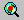

Generating Hotspot ViewPath
VCollab Pro uses the concept of viewpoints to store a display state and makes it available for retrieval at a later time. A sequence of view points is termed as a viewpath in VCollab Pro. The automatic hotspot generator in VCollab Pro generates the hotspots as a view path. Each viewpoint in a view path can display annotated hotspots over a zone of the mesh or over the whole geometry.
Steps to generate hotspots automatically
- Load a model, select the desired result (determines the hotspots) in the CAE results.
- Click CAE Settings | Hotspot Finder to open the Hotspot settings dialog box
- Select Hotspots options as per requirement. For understanding Hotspot Finder options click here.
- Make sure that 'Add Viewpoints' option is enabled to generate viewpoints. VCollab Pro adds a new path with the given name (say, “Strain Energy HotSpots” ) and switches the active view path to the new one. Users can click on different viewpoints and see the hotspots and annotations. The hotspots that are generated by this procedure can be saved into viewpoints for future use.
Steps to edit the generated viewpoint manually
- Create viewpath by generating hotspot as explained above.
- Open Probe Settings|Label Settings and check Keep Previous Labels option under Others tab
- Select a viewpoint generated previously, for example viewpoint “Object 1”
- Go to Tools -> Labels/Notes -> Delete Labels/Notes to remove unwanted annotations and Tools -> Labels/Notes -> Move Labels/Notes to move the annotations
- Uncheck the Tools -> Labels/Notes -> Delete Labels/Notes when completed
- Click the Hotspot Finder icon.
- Drag and select an area to create hotspots in that area.
- Right click on the viewpoint to be edited from the ViewPoint tab and select Update ViewPoint.
Generating hotspots manually using global extrema
The hotspots generated automatically may not serve the user requirement every time. In VCollab Pro users can delete or add to the automatically generated hotspots. However, for manual hotspot generation only nodes with global extrema values (minimum/maximum) are supported. [STRIKEOUT:Local extrema nodes are not supported at present.]
Steps to find hotspots manually
Click hotspot finder icon in the toolbar. The mouse mode is now changed to hotspot finder mode.
Click and drag on the graphics window to select a region as shown in the image below.

Once a region is selected, VCollab Pro locates the nodes with minimum and maximum values in the selected region and displays them as shown below.

The above picture shows two hotspots (node 25 and node 96) that are identified by VCollab Pro. The maximum deformation (displacement) in the selected rectangular window occurs at node 25 (magnitude of 1.866) and the minimum occurs at node 96 (magnitude of 0.016).
The user can select another region and display the nodes with minimum and maximum values. The number of hotspots along with other settings can be changed in Hotspot Finder settings dialog. This dialog can be opened using the following steps.
- Invoke CAE settings dialog by clicking on the menu item CAE -> CAE Settings.
- Click on the Hotspot finder tab.
- This opens the dialog with hotspot finder settings. The available settings is shown in the following screenshot.
- Select Min/Max option in 'Find' drop down list.

- All default settings except All Top and Bottom, are the same as in Hotspots option.
The following list explains different settings and their significance.
- The number of hot spots to be displayed can be controlled by changing the values in top and bottom text boxes. In the following figure, two top and three bottom hot spots are specified.

Selecting an area on the screen with the left mouse down with these settings, results in the display of five hot spots (two nodes with highest values and three nodes with the lowest values). Users can uncheck the top/bottom or change its count to zero to display only the nodes with the lowest/highest values respectively.
The Zone radius option that is provided in the hot spot settings allows the user to avoid locating hot spots next to each other.
Once a node with maximum/minimum is found, VCollab skips all the nodes within the specified radius of that node during its search for the next maximum/minimum. The following two images show the identified hotspots without and with the use of zone radius option.
Note: When the mouse control is in hotspot mode, users cannot zoom, pan or rotate the image. To be able to do so, while continuing in hotspot mode, users can turn on the Navigator by either turning on the Navigator in the product tree or by clicking the menu item Tools -> Navigator. The navigator displays additional entities on the graphical window which facilitate zoom, rotate of pan the scene.